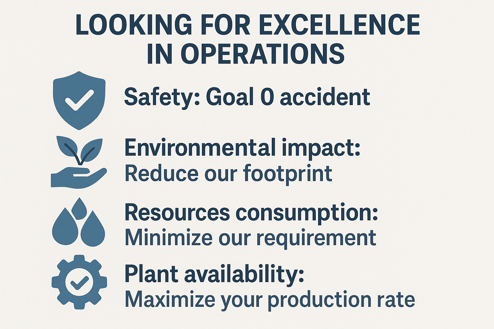

Atlantic Copper
Operations Manager
Converting, Refining & Casting
Jan 2025 — present
Leading day-to-day operations across three production areas of one of Europe's largest copper smelters — managing budget, people, quality, and continuous improvement simultaneously.
Graphic Summary

Experience Highlights
Managing an annual OPEX budget of +€22M, delivering execution with <2% deviation from forecast — two consecutive years running.
Directed a 100+ collaborator team. Implemented a coaching and feedback system that raised employee engagement scores by 25% in internal surveys. Technician performance lifted from 20% to 80%.
Reduced production-impacting events by 50% through proactive root-cause analysis and cross-functional coordination between operations, maintenance, and engineering.
Established regular bi-monthly reviews with customers, translating direct feedback into preventive actions and achieving a 15% decrease in quality incidents.
Led the integration of Engineering, Production, and Logistics in improvement projects, ensuring >95% on-time delivery in complex plant shutdowns.
Designed and implemented a workforce planning strategy achieving a 60% reduction in overtime spending through improved shift design and resource allocation.